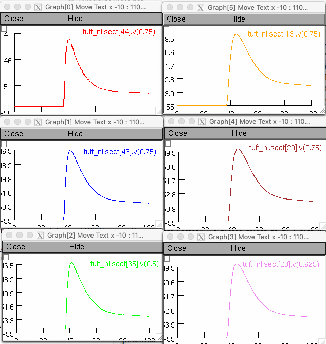

This is the readme for simulation code associated with the paper
Djurisic M, Antic S, Chen WR, Zecevic D (2004) Voltage imaging from dendrites of mitral cells: EPSP attenuation and spike trigger zones. J Neurosci 24:6703-14
http://dx.doi.org/10.1523/JNEUROSCI.0307-04.2004
This model was contributed by Dejan Zecevic.
This model requires NEURON which is freely available from http://neuron.yale.edu
Usage:
To run the model (linux/unix) compile the mod file with a command like
nrnivmodl
or for mswin or mac use makenrndll. Start with the mosinit.hoc file (linux):
nrngui mosinit.hoc
or by double clicking (mswin) or dragging and dropping (mac). If you need more
help to run the simulation on your platform please consult this page:
https://senselab.med.yale.edu/ModelDB/NEURON_DwnldGuide.cshtml
After running the model you should see the propagation of a passive EPSP into the tuft compartments similar to Fig 3G trace 3 in the paper:

This model entry includes a mitral cell morphology with a detailed reconstruction of a tuft (slightly more elaborate than the one depicted in Fig 3G in the paper)
depicted below in a shape plot with show diameter shape style selected